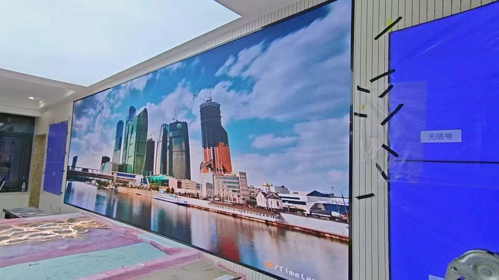
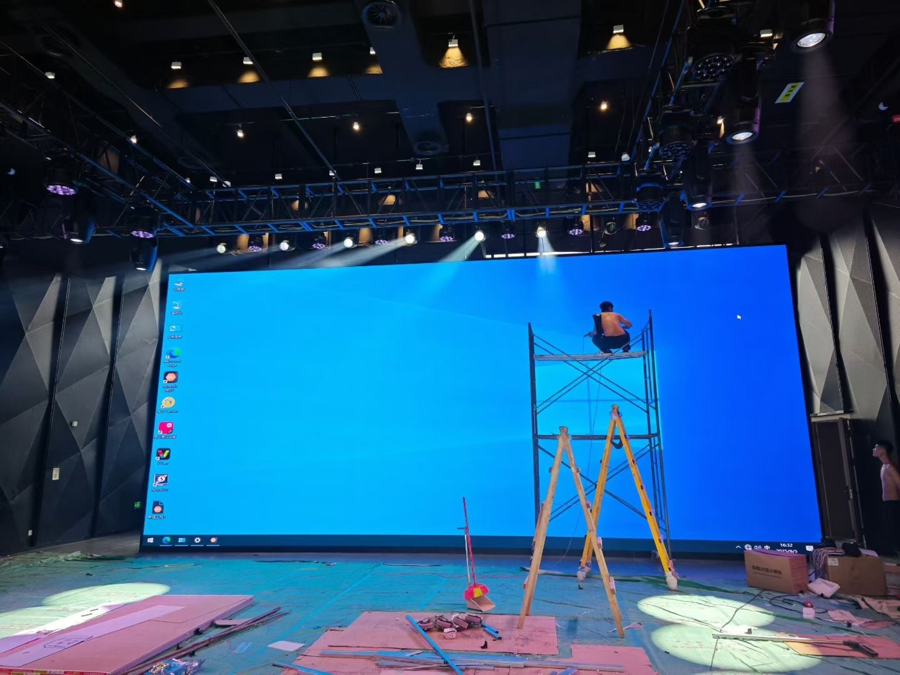

By David
What is an LED display hotel video wall? An LED display hotel video wall is a large screen used in lobbies, ballrooms, and event spaces to show branding, wayfinding, and live content. Hotels need screens that look elegant in public areas while surviving the demands of a busy event calendar. This 2026 guide explains how to specify a wall that serves both the lobby and the ballroom.
A hotel has two very different display environments under one roof. The lobby is a branding space where a screen must look refined at close range, often in daylight through glass doors. The ballroom is a working space where the same technology must display presentations, live feeds, and event graphics at high brightness for an audience seated far from the wall.
Buyers who treat these as one project usually end up with a compromise in both. The specification should separate the lobby and the event spaces, then look for a supplier who can deliver both while keeping the spare parts and control systems common across the property.
The lobby wall is the first thing a guest sees and the backdrop for countless photographs. It must be seamless, evenly lit, and quiet in operation, because a lobby is a place of conversation rather than a place of noise. Visible seams or fan hum undermine the impression the hotel is trying to create.
Brightness in the lobby should match the room rather than overpower it. An overly bright wall washes out nearby finishes and looks harsh in the evening, when the space should feel warm. Choose a screen with a wide dimming range and an ambient sensor so the wall follows the room through the day.
A ballroom display works much harder. It must be bright enough to read from the back of a large room with chandeliers lit, fast enough to handle live camera feeds without banding, and flexible enough to serve a conference in the morning and a gala in the evening. The same wall may host a product launch, a wedding, and a shareholder meeting within a single week.
Because events are filmed, the wall needs a high refresh rate and clean camera performance. Ask the supplier to demonstrate the screen on camera at the shutter speeds an event videographer would use, and write the refresh requirement into the specification, following the logic set out in the refresh rate guide.
| Hotel Space | Main Use | Display Priority |
|---|---|---|
| Lobby | Brand and welcome content | Seamless surface and quiet operation |
| Ballroom | Events and live feeds | Brightness, refresh, and camera performance |
| Meeting rooms | Presentations and video calls | Color accuracy and resolution |
| Restaurant and bar | Ambience and promotions | Warm dimming and fine pitch |
| Exterior facade | Branding and messages | Weather sealing and high brightness |
| Spa and wellness | Calm content | Very low brightness and smooth gradients |
Specify each space separately even when the property uses one supplier. A wall designed for the ballroom is too bright and too coarse for a spa corridor, and a wall designed for the lobby cannot carry a filmed keynote. Mapping the requirements by space prevents the expensive mistake of buying one specification for a building with six different needs.
| Space | Suggested Pitch | Typical Brightness | Note |
|---|---|---|---|
| Lobby feature wall | P1.5 to P2.5 | 600 to 1,200 nits | Dim to match evening mood |
| Ballroom main wall | P2.5 to P4 | 1,200 to 2,500 nits | Readable from the back row |
| Meeting room | P1.2 to P2 | 400 to 800 nits | Close viewing, fine detail |
| Restaurant feature | P1.5 to P2.5 | 300 to 800 nits | Warm tone, no glare |
| Exterior sign | P4 to P8 | 4,000 to 6,000 nits | Daylight readable, sealed |
Glare is a particular risk in hotels, where glass doors, polished floors, and mirrored surfaces surround the display. Ask for an anti-reflective surface treatment and check the screen in the real room at the times of day when sunlight falls on it. A wall that looks perfect at night can be unreadable at noon without the right surface.
Hotels need content control that event staff can use without technical training. A wall that requires an engineer to change a logo will not be used to its potential. Specify a control system with preset layouts, simple input switching, and permissions that let staff run events while protecting the branding content from accidental change.
The control system should also support the way events actually run. A gala needs a live camera feed, a slide deck, and a countdown timer on one wall, often switching between them quickly. Test these workflows with the hotel's own AV team during commissioning, and train the staff who will operate the wall on a normal event day.
Hotel installations usually happen while the property is open, which constrains working hours, noise, and access. Plan the installation around the occupancy calendar, and prefer a wall that can be assembled in sections so a corridor or a ballroom foyer is not blocked for days at a time.
Coordinate with the hotel's engineering team on power, structural support, and the routing of signal cables through finished interiors. Late changes to a lobby wall can damage recently completed decoration, so the design and the installation plan should be agreed before any finish work begins.
A hotel wall runs long hours, often from early morning until late at night, and it cannot fail during a wedding or a conference. Build redundancy into the power and signal paths for the ballroom wall, and keep spare modules matched to the installed batch so a repair can happen between events.
Choose a service partner who can respond outside normal business hours. Events happen on weekends and in the evening, which is exactly when a standard service contract is least available. Agree the response terms for critical spaces in writing, as described in the field service guide and the maintenance guide.
Most hotel groups publish a brand standard that governs signage, color, and finish, and a video wall must comply with it. Read the standard before designing, because a wall that satisfies the operator but breaks the brand rules will be rejected at the franchise review. Involve the brand's design team in the specification, and record their approval in writing so the installation is not challenged after the fact.
The brand standard also shapes content. Many groups specify how often the logo must appear, which fonts are permitted, and how promotional messages sit alongside brand imagery. Build these rules into the content templates so local staff cannot accidentally produce off-brand material, and lock the protected elements out of their reach in the control system.
Hotels sell quiet, and a video wall that hums in a lobby or a ballroom undermines that promise. Specify low acoustic fan output for guest-facing walls and measure the noise with the screen running, not from a datasheet. In a lobby, even a faint fan note is audible during a quiet evening, and guests notice it long before they notice the picture quality.
Heat is the companion issue. A large wall in a lobby or a ballroom adds to the cooling load, and an event space full of guests raises it further. Ask the supplier for the thermal output at the operating brightness and pass that figure to the mechanical engineer, so the air conditioning is sized for the display rather than against it.
Decide what the wall is for before buying it. A lobby wall may exist to impress arriving guests, a ballroom wall to win conference bookings, and a restaurant wall to sell a brand of drink. Each of those goals has a different measure, and a project without a stated goal becomes impossible to judge once it is installed. Write the goal into the brief so the design serves it.
Track the measure over the first year and review the content alongside it. A ballroom wall that helps win more events earns its cost, while a lobby wall running the same clip for a year stops being seen. Treat content refresh as a recurring budget line, because it is the part of the investment that keeps the wall working after the novelty fades.
Budget the lobby and event spaces separately, because their costs differ widely. A lobby feature wall carries the highest visual expectation and a fine pitch, while a ballroom wall trades pitch for brightness and refresh. Separating the budgets prevents the lobby specification from being quietly downgraded to fund an oversized ballroom screen.
Include the control system, the content design, the installation, and the service contract in the project cost. Hotels often underestimate the content and control line, then discover at commissioning that the hardware is ready but the staff cannot yet operate it. Treat content and training as part of the deliverable, not as an afterthought.
A hotel needs a partner who can support an LED display hotel video wall across several spaces and many years. Ask the supplier how they handle an LED display hotel video wall that fails during a wedding or a conference, and confirm they can respond outside normal hours. A supplier who cannot support an LED display hotel video wall on a Saturday evening is not ready for hospitality work.
Confirm the LED display hotel video wall can be maintained without disturbing guests, and that spare parts are held close to the property. For an LED display hotel video wall in a ballroom, a replacement module must match the installed batch so the repair is invisible. Ask the supplier to keep that stock and to document the batch for your LED display hotel video wall.

For this application our range covers the requirement directly: the COB CV-PRO series and the RH-PRO fine-pitch COB.
Tell us your lobby and event spaces, and we will propose pitch, brightness, and control for each zone.
Request Hotel SpecChat on WhatsApp